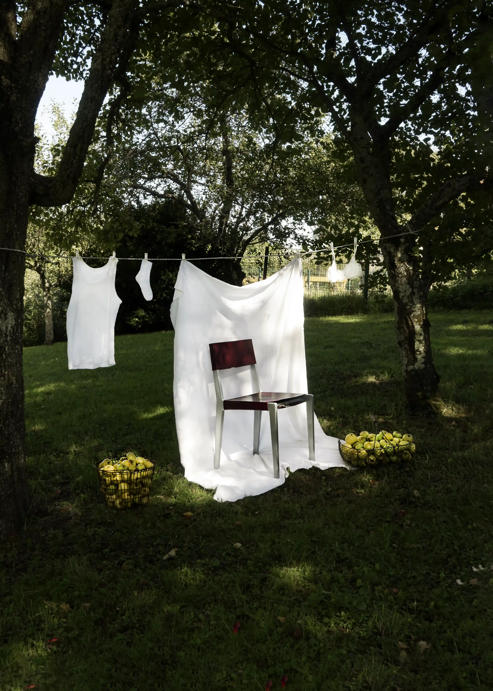
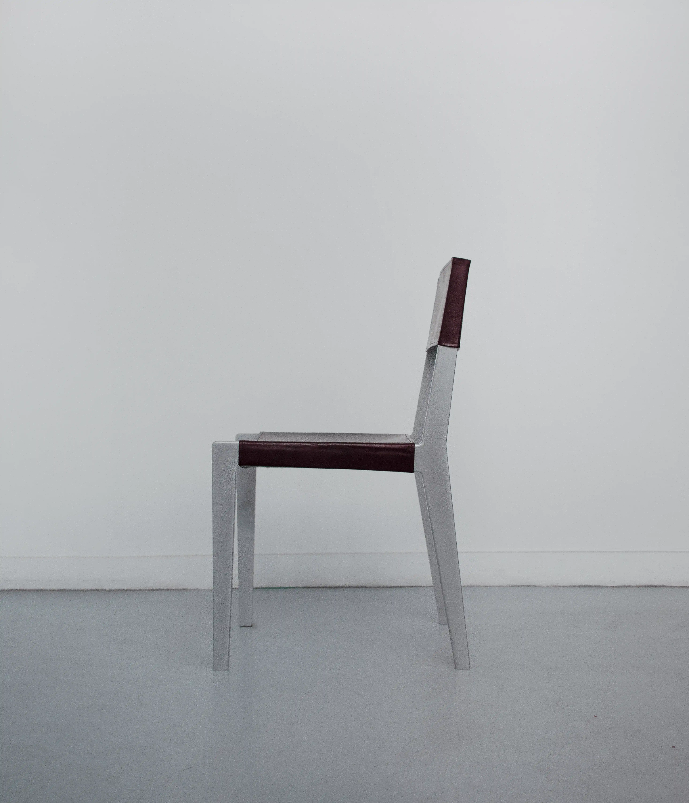
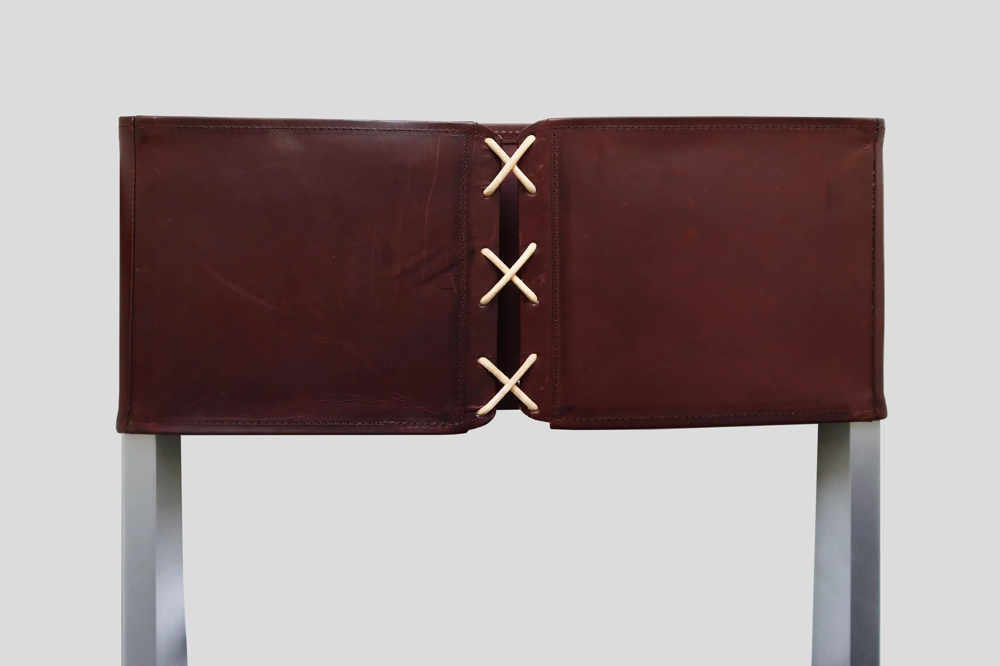
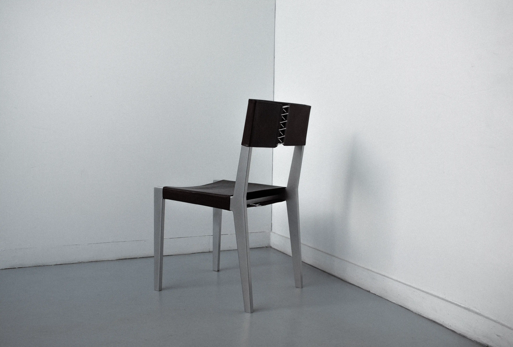
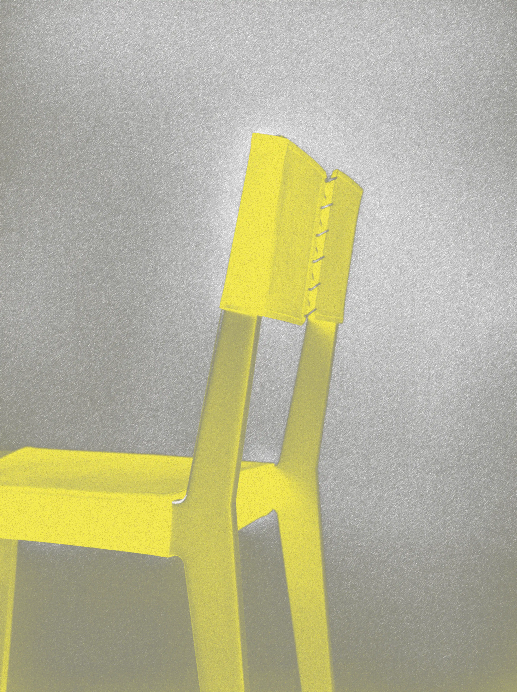
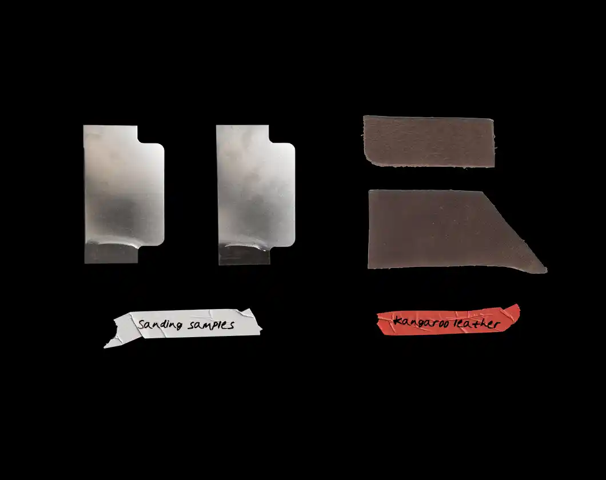

Kaurna Chair
July 2024
The Kaurna [ˈɡɑːrnə] Chair was designed and built on Kaurna Land, South Australia. Produced out of solid aluminum and kangaroo leather, its creation began with a curation of local materials but also a research of craftsmanship and manufacturing processes found across South Australia. The project grew from an investigation into what the region produces, transforms and knows how to make.
Aluminium became a natural starting point as its industry is deeply embedded in Australia, which brought a strong connection to local manufacturing and production, while maintaining a low environmental impact. Its rigidity and lightness allowed the Kaurna Chair to be designed as flat-pack, allowing to disassemble the whole structure and untie its corset-like upholstery.
On the other hand, the use of kangaroo leather carries a long history in Australia. I approached it primarily for its exceptional physical properties such as a fine grain, resilience and strength despite being very thin and lightweight. The leather modules were then strengthened with sailboat canvas to assure long term durability and comfort.
The Kaurna Chair is therefore built around a deliberate encounter between two very different materials. Their juxtaposition highlights a study of structure and comfort, industrial production and material durability.





